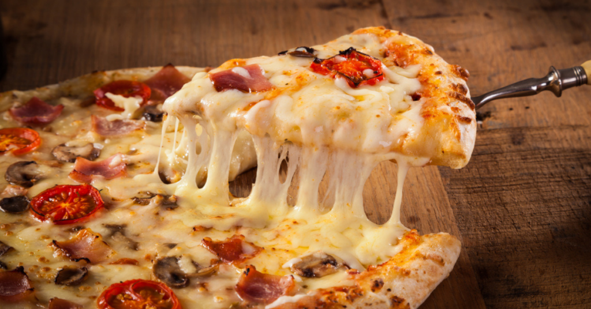

Home
Pizza

Description
A crispy, golden crust topped with rich tomato sauce, gooey mozzarella,
and fresh toppings like pepperoni,mushrooms, or bell peppers.
Finished with oregano and a drizzle of olive oil for the perfect bite! 🍕🔥
Ingredients
- Pizza Dough
- Tomato Sauce
- Mozzarella Cheese
- Toppings (pepperoni, mushrooms, bell peppers, olives, etc.)
- Olive Oil (for brushing the crust)
- Oregano & Chili Flakes (optional, for extra flavor)
Steps
- Preheat Oven – Set your oven to 220°C (425°F) and let it heat up.
- Prepare Dough – Roll out the pizza dough on a floured surface into your desired shape and thickness.
- Add Sauce – Spread a thin layer of tomato sauce evenly over the dough.
- Add Cheese – Sprinkle a generous amount of mozzarella cheese on top.
- Add Toppings – Place your favorite toppings (pepperoni, mushrooms, bell peppers, olives, etc.) over the cheese.
- Season & Drizzle – Sprinkle with oregano and chili flakes, then drizzle a little olive oil for extra flavor.
- Bake – Place the pizza on a baking sheet or pizza stone and bake for 12-15 minutes, or until the crust is golden and the cheese is melted.
- Serve & Enjoy – Let it cool for a minute, slice it up, and enjoy your homemade pizza! 🍕🔥